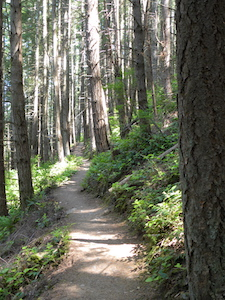
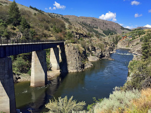
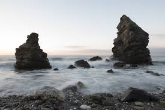

Those great big fluffy clouds. We must be quiet, soft and gentle. Do an almighty painting with us. When you buy that first tube of paint it gives you an artist license.
Remember how free clouds are. They just lay around in the sky all day long. Take your time. Speed will come later. The only thing worse than yellow snow is green snow. Clouds are free they come and go as they please. Every day I learn.Click here to make the trail go away.
Remember how free clouds are. They just lay around in the sky all day long. Take your time. Speed will come later. The only thing worse than yellow snow is green snow. Clouds are free they come and go as they please. Every day I learn. Click here to make the bridge go away.
Remember how free clouds are. They just lay around in the sky all day long. Take your time. Speed will come later. The only thing worse than yellow snow is green snow. Clouds are free they come and go as they please. Every day I learn. Click here to make the bridge go away.
